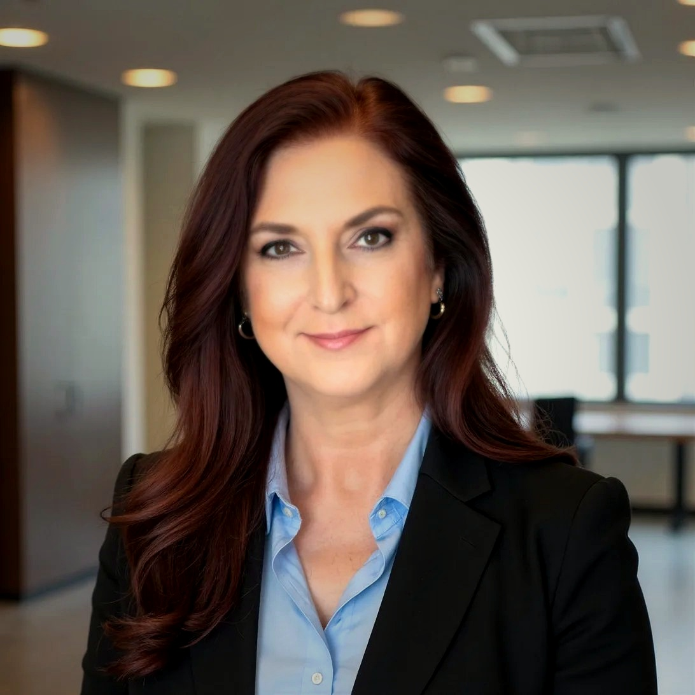

DSL, MBA · Founder & Managing Director, Noespera Studio
Founder, Organizational Meaning Science™ · Architect, DNA Workshop Suite™

Dr. Joan deBien-Trammell, DSL, MBA
Founder & Managing Director
Noespera Studio
Thirty years of watching meaning get lost in the space between what leaders intend and what people actually hear.
It starts small. A strategy presentation where everyone nods but nobody moves. A reorganization announced with careful language that somehow lands as threat. A leader who genuinely cares — but whose team interprets every interaction through a lens of uncertainty. The meaning gets there. Just not the meaning that was sent.
Across three decades and five major organizations — Gallup, L'Oréal, Johnson & Johnson, Pierre Fabre, Sandoz Biopharmaceuticals — I watched this pattern repeat at every level. In boardrooms and on sales floors. In cultures that were thriving and in organizations in crisis. The gap between intention and interpretation wasn't a communication problem. It was a meaning problem.
And no one had built the science to address it.
"Leadership isn't about controlling how people interpret your decisions. It's about stewarding the conditions under which meaning forms."
That insight didn't come from a book. It came from years of sitting inside complex organizations — scaling a $400M portfolio at L'Oréal, leading commercial transformation at Pierre Fabre, advising Fortune 500 leaders at Gallup — and watching how meaning moved, or didn't, through every layer.
The doctoral work gave me the language and the rigor. Liberty University's Strategic Leadership program became the container for something I'd been building in practice for decades: a formal research discipline examining how meaning functions as a systemic force. Not as metaphor. As mechanism.
That discipline is Organizational Meaning Science™. Noespera Studio is where it lives in practice — in workshops, in advisory engagements, and in a growing platform of proprietary measurement instruments designed to make meaning visible, measurable, and actionable.
The work matters most at the moments that matter most: a leadership transition, a capital raise, a culture at a crossroads, a team that keeps getting stuck in the same place. When the stakes are high and meaning can't be left to chance.
That's what I built Noespera to do.
Organizational Meaning Science™ is grounded in a growing portfolio of proprietary measurement instruments and diagnostic frameworks — each designed to surface what traditional organizational tools miss entirely. Two instruments are currently patent-pending, with additional filings in progress.
Computational infrastructure for modeling human meaning states using behavioral signals — the foundational architecture underlying the full instrument suite. Filed December 2025.
Interpretation Through Experience Scale. Measures how meaning is being interpreted across organizational contexts — from individual through enterprise level.
A suite of proprietary measurement instruments across interpretive pattern analysis, meaning climate diagnostics, and leadership alignment assessment. Filings in progress.
All instruments are proprietary to Noespera Studio, LLC. Meaning Architecture System™ and ITES™ are patent pending. Additional filings in progress.
Working papers available on SSRN — the world's leading repository for social science research. Searchable and indexed globally.
SSRN Working Paper · April 2026
Organizational Meaning Science: Integrating Process and Structure in Meaning Dynamics
ssrn.com/abstract=6503881 →SSRN Working Paper · March 2026
Organizational Meaning Science: The Meaning Loop as a System-Level Model of Meaning Dynamics
ssrn.com/abstract=6453241 →Thirty years across five major organizations. One through-line: understanding how meaning moves — and what happens when it doesn't.
Strategic advisory to organizations across cosmeceutical, CPG, real estate technology, architecture, and other sectors. DNA Workshop Suite™ deployed with founders and leadership teams navigating capital readiness, team alignment, brand development, and organizational design. Platform development and proprietary instrument suite in active deployment.
Senior advisor to Fortune 500 organizations on culture transformation, leadership development, and engagement strategy. Delivered transformation engagements exceeding $4M in value.
Led commercial transformation resulting in 275% marketplace penetration increase and 20% year-over-year growth.
Led organizational integration and growth across a $400M+ portfolio. Built and scaled a national sales organization by over 300%.
The scale of interpretive complexity here — across hundreds of people, dozens of markets, constant organizational change — became the laboratory for what would eventually become the methodology.
Led U.S. brand strategy and launch execution for the first FDA-approved biosimilar in the United States, achieving 2% market share within three quarters.
Organizations thrive when people share common frameworks for interpreting information and making decisions.
Most organizational tools measure outcomes — what people feel, how engaged they are, whether they'd recommend the company to a friend. Those are trailing indicators. By the time you're measuring them, the meaning has already moved.
The work of Organizational Meaning Science™ is upstream. It measures the conditions under which people make sense of what's happening — interpretive patterns, meaning climate, alignment gaps — before they produce the outcomes everyone else is trying to fix.
That's the distinction that changes what's possible. Not better interventions after meaning breaks down. Structural intelligence that shows you how meaning is moving right now — so you can lead with it, not against it.
Engagements are built collaboratively with organizations, producing frameworks and insights that teams own long after the work is done. The goal is never dependency. It's durable capability — frameworks built from the inside, grounded in real interpretive data, designed to hold.
Whether you're navigating a leadership transition, a strategy that isn't landing, or a team that keeps getting stuck — the work begins with understanding what's actually moving through your organization.
Get in Touch